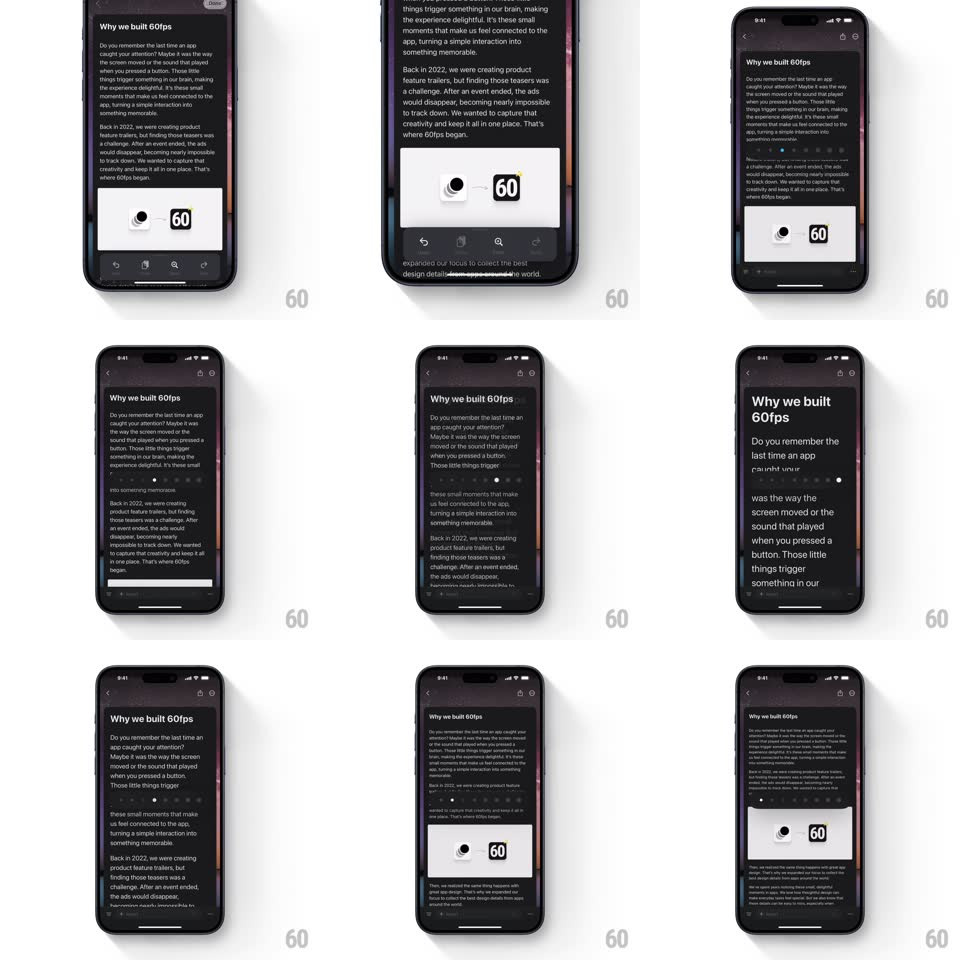

Media
Frame-by-frame

Rebuild this interaction 1:1: Craft's text zoom slider - a horizontal slider with a small-A to large-A scale live-resizes the document's typography as you drag, with the text reflowing fluidly and the slider thumb showing the current zoom value.

Rebuild this interaction 1:1: Craft's text zoom slider - a horizontal slider with a small-A to large-A scale live-resizes the document's typography as you drag, with the text reflowing fluidly and the slider thumb showing the current zoom value. ## Integration Integration: stack-agnostic spec - springs given as stiffness/damping, timed motions as duration + curve; map every value to your framework and animation library of choice. ## Scene A Craft document with the zoom control visible (small "A" at the left of a track, large "A" at the right, a rounded thumb). The document behind shows a title and body paragraphs. ## Motion spec Pattern: live typographic scaling. - Drag: all document text scales continuously with the thumb (1:1, ~70%-160% range), preserving the type ramp proportions (title, body, captions scale together). - Text reflows live: line wraps re-break during the drag with no flicker; scroll position anchors to the first visible line so the reading point holds. - The thumb tracks the finger and displays the current percentage; the A glyphs at the ends stay fixed size. - Release: the zoom settles without snap (value is continuous); the control fades back to a compact pill after 1.5s idle (250ms). ## Calibration - Scale typography, not the layout canvas: images and margins adjust but do not zoom 1:1 with text. - Reflow must be per-frame - deferred relayout reads as lag. ## Reduced motion Zoom applies on release in one step (100ms tween); no live reflow. ## Don't miss - The control appears over the document (floating), not inline in the text. - The reading position never jumps - anchor the viewport to content, not to pixel offsets.